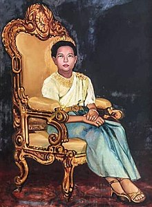
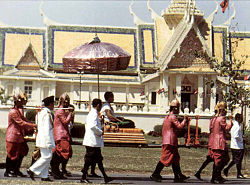

Sisowath Kossamak (Khmer: ស៊ីសុវត្ថិ កុសមៈ; 9 April 1904 – 27 April 1975) was the queen consort of King Norodom Suramarit of Cambodia, who reigned from 1955 to 1960. After her husband's death in 1960, her son Norodom Sihanouk became chief of state, while Kossamak played an important public representational rule during her son's reign in 1960-1970. Sisowath Kossamak was born a Cambodian princess as the daughter of King Sisowath Monivong and his wife Norodom Kanviman Norleak Tevi. Her official title was Preah Mohaksatreiyani Sisowath Monivong Kossamak Nearirath Serey Vathana (Khmer: ព្រះមហាក្សត្រិយានី ស៊ីសុវត្ថិមុនីវង្ស កុសុមៈនារីរ័ត្នសេរីវឌ្ឍនា).
Upon the death of Monivong in 1941, Sihanouk took the throne. In 1955, he abdicated in favor of his father Suramarit, who then reigned for five years. After her husband's death, Kossamak kept her title of Queen and continued to function as the symbol and representative of the monarchy while Sihanouk assumed his position as monarch, but titled as Prince rather than King. Contrary to what has sometimes been alleged, she was never a monarch, as female succession was forbidden in the constitution. After the coup in March 1970, Kossamak was placed under arrest, but retained her title before being stripped of all status during the formal proclamation of the republic in October the same year. She remained under house arrest until her health declined in 1973, and she was allowed to join her son in China.[1] Kossamak died in Beijing on 27 April 1975, ten days after the Khmer Rouge captured Phnom Penh.
Sisowath Kosamak was the daughter of King Sisowath Monivong and Queen Norodom Kanviman Norleak Thevi.
XShe married her father's cousin[clarify] prince Norodom Suramarit in 1920.
Upon the death of her father Monivong in 1941, Sihanouk, her son and Monivong's grandson, was selected as the new king.
In the 1940s, Kossamak famously choreographed the apsara dance by training her first grand daughter, Princess Norodom Bopha Devi, to become the first Apsara dancer.

In 1955, Sihanouk abdicated in favour of his father, making Kossamak queen consort. In 1955, Shihanouk married Princess Monique. She was not on good terms with her daughter-in-law, Princess Monique, which led to advisories blaming Monique for the sometimes strained relationship between Kossamak and Sihanouk, and for Sihanouk's alleged initial hesitance to abdicate, as it would make his mother queen.[2] Like her daughter-in-law, she was accused of promoting proteges to civil offices.
Queen Kossamak enjoyed great respect and popularity: despite being neither a monarch nor politically influential, she was said to exert great moral authority over the Khmers, was described as generous to the poor and devoting herself to the welfare of the nation.[2] As queen, she received foreign guests and hosted state functions, where the Royal Ballet of Cambodia often performed.[2] A notable state visit was that of Chen Yi in November 1958, who led a women’s delegation from the People’s Republic of China.
Her son Prince Sihanouk had sworn in 1955 that he would never again ascend the throne, and he had also forbidden his own children from assuming sovereignty during his lifetime.[2] When king Norodom Suramarit died in 1960, a demonstration took place in Battambang in which the protestors called for the widowed Queen Kossamak to take the throne as a ruling monarch.
The growing opposition gainst the Shihanouk-regime, however, did influence the perception of the queen mother as well. It has been suggested that Queen Kossamak did exercise the prerogative in influencing appointments to civil service positions and investment in non-transparent enterprises, which were normal for the Cambodian elite at the time. In 1968, there were slander among the opposition against both her and her daughter-in-law princess Monique for greed, for enriching themselves and for managing a brothel.
After the Cambodian coup of 1970, Kossamak was forced to leave the royal palace by the new government and held in house arrest in one wing of Khemarin Palace to prevent her from becoming involved in any potential royalist uprising. She was however asked by the Khmer Republic government to mediate between her son and the National Assembly ‘in a last-ditch attempt to turn the people’s anger and save her son’.
She was allowed to join her son in Beijing in China for health reasons in 1973.
She died in Beijing in China 27 April 1975, shortly before her son and daughter-in-law returned to Cambodia.